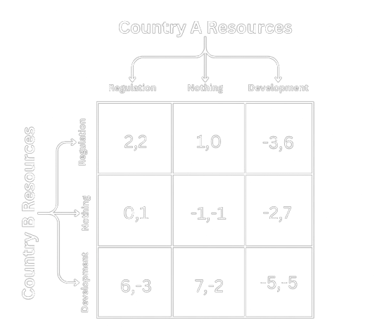

Abstract
AI, like any other emerging and disruptive technology, holds the potential to transform society both positively and negatively. Using a game theory framework, this paper examines the geopolitical implications of AI development and its weaponization, arguing that the strategic pressures driving AI development create a self-reinforcing cycle that undermines any comprehensive regulations of AI. Looking at similarities to the nuclear arms race, unrestrained AI development highlights the risks and the urgency of addressing them. The paper concludes that comprehensive global regulation may most likely emerge only after significant adverse impacts of the AI will be witnessed, highlighting the critical need for international cooperation to address weaponization of AI before it escalates further.
Introduction
(Al Bartlett, American Professor of Physics)1
AI is considered to be as transformative as electricity and as impactful as industrialization.2,3 It is further estimated that AI has the potential to boost global economic activity by approximately $13 trillion by 2030.4 Whether this specific estimate materializes remains to be seen, but it is not only capitalistic competition that will drive AI development. War, and a need for the best defense technologies, have historically driven innovation and been responsible for breakthroughs like the radar, the Internet, GPS, and nuclear energy.5 Due to its wide array of uses, the weaponization of AI is of both major concern and major interest for many countries.6 AI has the potential to transform warfare, with some experts predicting that it could be as game-changing as gunpowder or nuclear weapons.
AI has thus become an element of geopolitics impossible to ignore. While some countries are still struggling to understand it, others are actively embracing it for their “defense.” Countries that do not possess the resources for AI development, like knowhow and computational power, want to slow down and regulate. Other states, those with the resources to invest in AI development, want to regulate other countries but not themselves. This advent of AI and its weaponization have created a new strategic security dilemma that is forcing states to enter the AI race if they have the resources to do so. This dilemma not only invites rapid and careless development of AI but also further debilitates any serious efforts to regulate AI.
This paper comes from the need to understand the role of AI and other similar emerging and disruptive technologies in global competition and modern warfare. States and their militaries feel pressured to develop AI for defense because everyone else is, leading to a vicious cycle of countries competing to stockpile capacities and find the most creative ways to use AI in warfare.
Source of the Dilemma
Yossi Sariel, the head of Unit 8200 of the Israeli Intelligence Corps, argued that machine learning, a subset of AI, will transform modern warfare and that it should enter the mainstream. “We just need to take them [AI models] from the periphery and deliver them to the center of the stage,” he said in his book.7 Early efforts to weaponize AI can be traced back to the 2000s, when China worked on hypersonic glide vehicles guided by AI.8 The more recent and extensive boom in the weaponization of AI is a result of new breakthroughs in research, the fact that some AI models are now open-source, and, most importantly, an intensifying global competition that drives the need to have the upper hand in warfare.
Though most of the population perceives AI to only be a chatbot like ChatGPT or some futuristic sci-fi possibility, AI weaponization is closer to reality than many people realize. For example, AI is already enabling the automation and personalization of propaganda, disinformation, and deepfakes, producing them at a higher quality and lower cost than humans can.9 This AI-generated content can be used directly on the battlefield like it was in March of 2022, when a video impersonating Ukrainian President Volodymyr Zelenskyy requested that the country’s forces lay down their arms and surrender.10,11 This use of AI represents a huge challenge for democratic systems which legitimacy relies on voters’ access to accurate information. This complicates the realm of information warfare, another domain of conflict that is rapidly developing.
Among other examples, AI-powered facial recognition is already being used to identify undercover agents and expose soldiers. Potential biases in these facial recognition models are inviting concerns over causing indiscriminate harm, e.g. by misidentifying civilians as targets. In addition, unmanned vehicles and AI-powered robots like drones are already redefining warfare, as well as the logistics and supplies behind it. Multiple efforts to give AI models physical "bodies" extended their reach from the digital to the physical realm. AI is not anymore constrained to operate only in digital domain but is in some form already able to manipulate and interact with the physical world, e.g. through facial recognition kamikaze drones. Furthermore, there are already AI models documented to be used for missile targeting. The Lavender Model, for example, marks potential targets based on hundreds of features, one of which is whether an individual is in a WhatsApp group with a known militant. This model evaluates data to produce a probability of how likely it is that the target is associated with militants, with an estimated accuracy of 90%. In other words, it falsely marks human targets 10% of the time.12
While the weaponization of AI may decrease human error, either by reducing the cognitive overload or human biases, it also introduces new ways to kill people and, therefore, new challenges.13 The most challenging issue is the declining role of humans. As long as a human makes the final call to kill or not kill, AI is just a tool in the hands of man. Outsourcing the decision to an algorithm, with all their potential biases, introduces risks. A human must be in the loop to call the final shots, based on the model's recommendation, because humans can second-guess directives and consider ethics when making a decision involving life and death. Compared to humans, AI models lack emotions. Where an individual may disobey an unlawful or unethical order, autonomous AI models cannot differentiate between moral and immoral. Soviet submarine officer Vasily Arkhipov who averted a nuclear war during the Cuban Missile Crisis when he chose not to approve a nuclear torpedo launch serve as illuminating example necessitating human in the loop. If humans are not in the loop of a lethal AI system, then the creator should be responsible under law for the results of the AI model, as much as the person in the loop calling the shot would be.
How AI Has Aggravated Global Competition
eventually will be engulfed in events shaped by others.”
(Special Studies Project, 1956)14
The development and regulation of AI are, within the current global competition, almost incompatible. Despite and because of AI’s incredible potential, “nations and corporations are competing to rapidly build and deploy AI to maintain power and influence. Similar to the nuclear arms race during the Cold War, participation in the AI race may serve individual short-term interests, but ultimately amplifies global risk for humanity,” according to the Center for AI Safety.15 AI is a subject of interest for major competing powers, which creates massive challenges for policymaking, diplomacy, and society.
Division of States: GPU Rich & GPU Poor
According to the 2019 Stanford AI Index, AI’s heavy computational requirement outpaces Moore’s Law, doubling every three months rather than two years.16 This means not only that the pace of AI development is faster than chip development but that, most likely, chipmakers will eventually not be able to supply the necessary infrastructure to run AI models. The computational power (GPU), along with energy requirements, necessary for AI will become a new and more limited currency. Countries will soon be divided into GPU rich and GPU poor.17 With AI's potential to transform the economy, the race to develop AI will not only be about the weaponization of AI but also about staying economically relevant and competitive. The two goals of AI development and economic strength are mutually reinforcing. Only countries that have enough economic resources and the ability to translate them into GPU infrastructure, expertise, and use will be able to compete in AI.
The Strategic Dilemma
(Henry A Kissinger, in the Age of AI, 2021)18
The current model for the AI race resembles the game theory approach that dominated policy circles during the Cold War’s nuclear race. In an extremely simplified example, if country A tries to slow down and focus on domestic or international regulation of AI, country B would, considering the payouts (newly gained AI capabilities) most likely advance on development and get ahead. Therefore, the most logical choice for both countries is to invest in AI development. In this way, the strategic dilemma of the AI race resembles the prisoner’s dilemma, where decision-makers are incentivized towards mutually more destructive behavior. Countries must compete and invest in development because other countries are doing so. Countries that have no resources to invest are left to either do nothing or try to regulate, resulting in lower payouts than countries that can invest in development. Overall, due to economic and security reasons, it is logical for countries to invest in the development of AI if they have the resources.

Strategically, for the sake of security and economic competitiveness, it is not possible to exit this game. Countries that have means to invest to AI development, cannot decide not to and just exit it as it would not prevent other countries from continuing to invest into the development. Such decision would put the "exiting" country at a disadvantage in terms of economic growth, military security, and global influence. This inescapability limits the options, further exacerbates the issue and enables reckless development of AI in this game.
Compared to the effects of nuclear weapons, the effects of AI systems are not yet fully explored. It is possible to calculate, quite precisely, the potency of nuclear bombs or to estimate the damage they would incur upon deployment. These impacts, along with examples from the Cold War, Hiroshima, and Nagasaki, are easy to imagine and, as a result, work well for nuclear deterrence. The same cannot be said about AI. The potential damages caused by AI models are, due to their novelty and complexity, more difficult to predict. As a result, this strategic dilemma produces uncertainty, anxiety, and suspicion amongst involved stakeholders which thwarts cooperation, increases polarization, and further exacerbates an already tense environment between competing countries.
If there’s a bear in the woods, you just have to be faster than the slowest person.”
(Dawn Meyerriecks, former Deputy Director for Science and Technology at the CIA)
According to the Center for AI Safety, “Competition could push nations and corporations to rush AI development, relinquishing control to these systems. Conflicts could spiral out of control with autonomous weapons and AI-enabled cyber warfare. As AI systems proliferate, evolutionary dynamics suggest they will become harder to control.”19
Current Regulatory Efforts
The main takeaway of this paper is that competition within and between nations in the AI race goes against any common-sense safety measure. AI is big business, and as the race toward more powerful AI systems quickens, corporations and governments are increasingly incentivized to reach the finish line first. Economically, there are no market incentives for safety research, and any regulations just undermine gains. As a result, the amount of research on AI safety is comparably smaller than the amount of research on AI development. For this reason, governments should offer subsidies for safety research as soon as possible.
The European Union’s AI Act was the first piece of enacted legislation that categorized AI models under different threat levels and regulated them accordingly. As with other similar regulations, however, it applies only within its jurisdiction and not internationally. The United States introduced its Political Declaration on Responsible Military Use of Artificial Intelligence and Autonomy. Its goal was to build international consensus around responsible behavior and guide states’ development, deployment, and use of military AI. The declaration, which is not a treaty, was only endorsed by 57 countries as of November 2024.
The major issue with these and similar initiatives is that they are disconnected and unharmonized. Eric Schmidt argued that initiatives focused on AI regulation need to be “stitched together.”20 It is necessary to build such regulation at an international level, so all countries can be involved in creating rules for AI. Nevertheless, history suggests that comprehensive and international regulations only follow significant conflicts. For instance, the comprehensive regulation of chemical weapons only emerged after the horrors caused by chemical weapons during World War I. The Geneva Protocol, which bans the use of chemical and biological weapons in international armed conflicts, was introduced in 1925 and only better enforced later thanks to the Chemical Weapons Convention (CWC) of 1993. Similarly, we might expect the comprehensive regulation of AI to emerge only after its significant impact is felt. While countries are signaling a need for more AI regulation with declarations and various initiatives, no proactive and serious regulation has come into fruition. As seen in the game theory model, major competing powers simply lack the logical incentive to create such universal rules. Yet just as world leaders managed to agree upon the Outer Space Treaty, which bans the storage of nuclear weapons in space ahead of fully occupying it, or on the START treaty that led to nuclear arms reduction, rules for the AI race can be agreed upon.
Limitations of the Paper
While information on regulatory efforts is easily accessible, it is more difficult to map all the use cases of AI weaponization. It is safe to assume that some of the use cases and developments of AI systems are and will be unknown due to their classified nature. Therefore, one limitation of this work is the fact that many AI models used in warfare may be developed in secrecy. Any related information that would be helpful for regulation would then be unavailable. The creativity of AI weaponization will only be unveiled in future conflicts, so this analysis is bounded to what is currently known. This paper also focuses only on the offensive use of AI as it better necessitates the need for regulation. However, defensive use cases should not be automatically immune to regulation, and additional research should be dedicated to them. Lastly, the game theory approach is limited in its emphasis on modeling simple, logical decision-making when humans are neither simple nor always logical. As much as game theory can explain, it can also omit many important nuances. In example, misconception that regulation automatically thwarts the development, rather then safely guiding innovations, encouraging trust, and creating leveled playing field.
Conclusion
As companies hurry to improve the tech and profit from the boom, research about keeping these tools safe
is taking a back seat.”
(Andrew R. Chow and Billy Perrigo for TIME, 2023)21
This paper used game theory to examine the interplay between AI development and regulation, explaining why comprehensive regulations are, at this time and in this global environment, basically impossible. While the weaponization of AI is increasing uncertainty and exacerbating the security dilemma between states, the search for a solution should not be abandoned. The biggest challenge will be to find a way to make regulations and safety of AI more appealing than its rapid development and weaponization. Despite its potential, AI is man-made, not God-made, and it is safe to assume that human nature, with all its beauty but also flaws, will be reflected in it. For these reasons, it is necessary to firstly create more transparent environment to be able to designs regulation that create trust in this new technology.